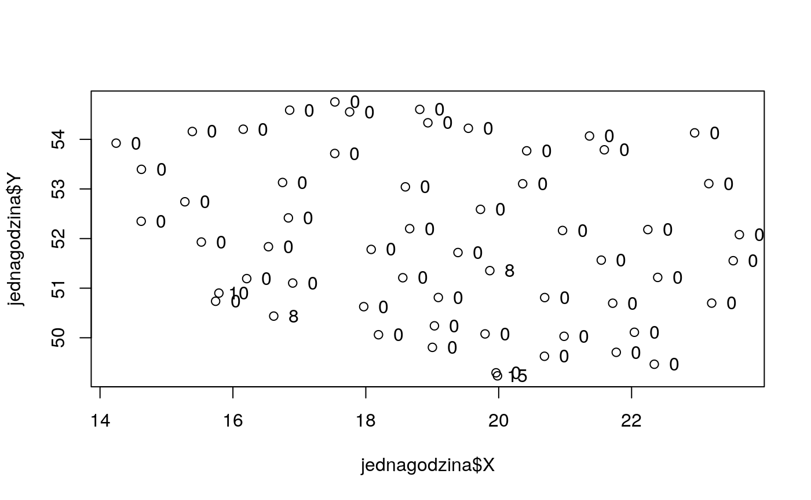
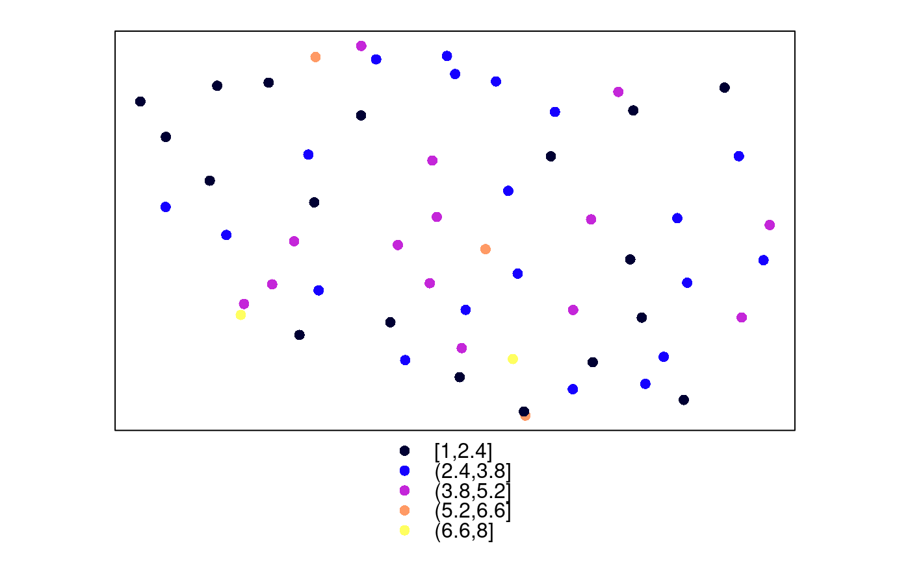

usecase2.Rmd##
## Attaching package: 'dplyr'## The following objects are masked from 'package:stats':
##
## filter, lag## The following objects are masked from 'package:base':
##
## intersect, setdiff, setequal, union## Loading required package: sp## rgdal: version: 1.4-4, (SVN revision 833)
## Geospatial Data Abstraction Library extensions to R successfully loaded
## Loaded GDAL runtime: GDAL 2.4.0, released 2018/12/14
## Path to GDAL shared files: /usr/share/gdal
## GDAL binary built with GEOS: TRUE
## Loaded PROJ.4 runtime: Rel. 5.2.0, September 15th, 2018, [PJ_VERSION: 520]
## Path to PROJ.4 shared files: (autodetected)
## Linking to sp version: 1.3-1library(sp)
# pobieranie danych:
df <- meteo(interval = "hourly", rank = "synop", year = 2017, status = FALSE, coords = TRUE )
df <- filter(df, mm == 8, day %in% 11:12) %>% select(., X:hour, ws, gust, t2m, rh, slp, curr_weather)
# pojedyncza godzina
jednagodzina <- df %>% filter(hour == 16, day == 11) # wybranie tylko godziny 16 z 11.08
plot(jednagodzina$X, jednagodzina$Y)
text(jednagodzina$X+0.3, jednagodzina$Y, labels = jednagodzina$gust)

proj4string(jednagodzina) <- CRS("+init=epsg:4326") # nadajemy wspolrzedne dla ukladu wspolrzednych WGS-84
jednagodzina <- spTransform(jednagodzina, CRS("+init=epsg:2180")) # transformacja ukladu wspolrzednych na PUWG-1992
#writeOGR(obj = jednagodzina, dsn = getwd(), layer="godz16.shp", driver = "ESRI Shapefile")